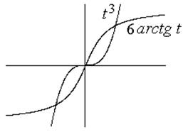
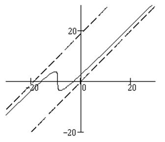

П19.2.№2.
Постройте кривую ,
заданную параметрически.
РЕШЕНИЕ:

Возможные точки пересечения графика с
координатными осями – решения уравнений и
.
Ось  пересекается
один раз в точке, соответствующей , ось
пересекается
один раз в точке, соответствующей , ось  пересекается трижды, что легко
видеть из соответствующих графиков.
пересекается трижды, что легко
видеть из соответствующих графиков.
пересекается
один раз в точке, соответствующей , ось пересекается трижды, что легко
видеть из соответствующих графиков. При график
функции лежит в первом квадранте,  , ; при –
в третьем: , .
, ; при –
в третьем: , .
, ; при –
в третьем: , .Рассмотрим возможные асимптоты:
,
,
 – правая
наклонная асимптота графика, соответствующая .
– правая
наклонная асимптота графика, соответствующая .,
,
– левая
наклонная асимптота графика, соответствующая .
Вычислим производные.
, , ;
, , .
При ,  ,
, т.е., в точке касательная к графику вертикальна.
,
, т.е., в точке касательная к графику вертикальна.
,
, т.е., в точке касательная к графику вертикальна.Найдем корни первой производной: .
Очевидно, при локальный
максимум, , ;при локальный
минимум, , .
Вторая производная меняет знак в единственной
точке при ; при ,
график выпукл вниз, при , график выпукл вверх.
Из этого следует, что график не пересекает
асимптоты, в противном случае направление выпуклости должно было бы смениться.

Ответ:
-
максимум;  - минимум, - точка перегиба, и -
асимптоты
- минимум, - точка перегиба, и -
асимптоты
- минимум, - точка перегиба, и -
асимптоты